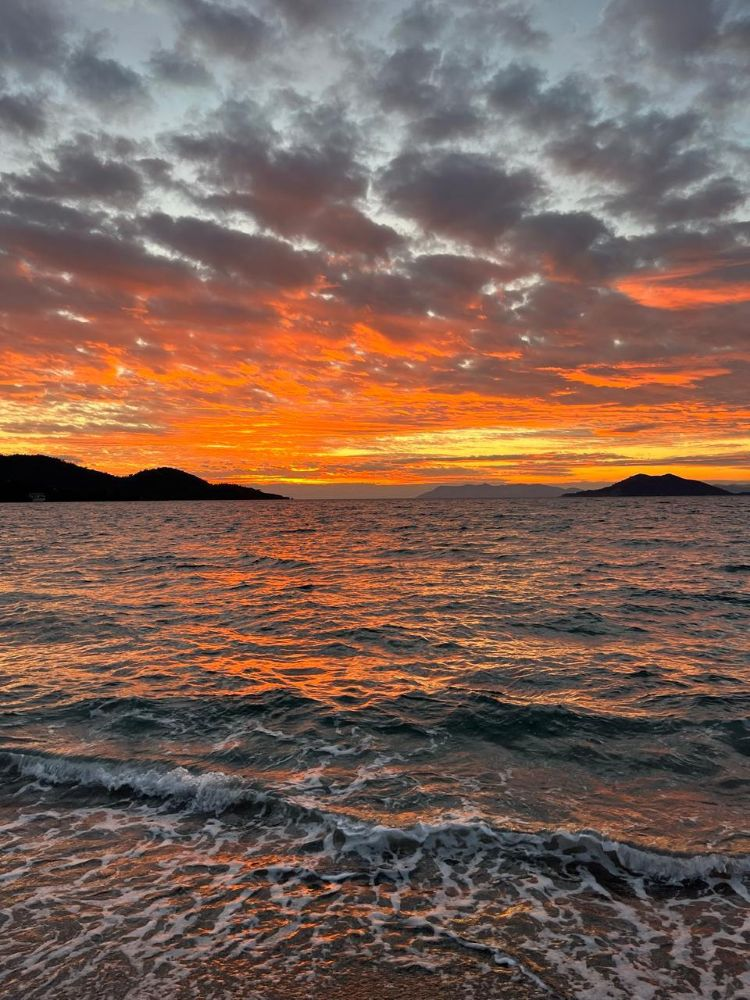
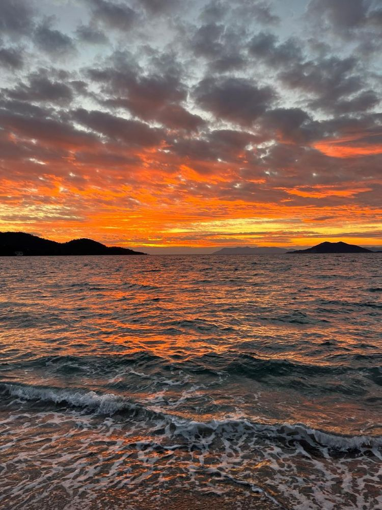

azure sailing
Мы путешествуем на современных яхтах, созданных для комфортного отдыха на воде
Каждая яхта оснащена уютными каютами, где можно расслабиться после насыщенного дня на море. На борту есть всё необходимое для комфорта: душ, чтобы освежиться, и холодильник, где всегда ждёт холодное просекко для вечерних тостов. Яхты — это не только про море, но и про отдых. Здесь есть места для загара под солнцем и уютные уголки для вечеринок на закате. С нами каждый день — это маленький праздник под парусами!
ЗАДАТЬ ВОПРОС
ТУРЦИЯ
Турецкая ривьера — это место, где каждый поворот открывает новый мир: бирюзовые воды, древние города, скрытые бухты и белоснежные пляжи. Здесь каждый день словно создан для идеальной открытки, а каждое место пропитано духом истории и приключений. Путешествие по этой части Турции — это не просто прогулка под парусами, это возможность прикоснуться к древности, исследовать живописные побережья и погрузиться в атмосферу восточной сказки. Мы будем останавливаться в самых красивых уголках, наслаждаться вкуснейшей турецкой кухней, купаться в кристально чистых водах и встречать закаты, от которых захватывает дух. Турецкая ривьера — это идеальное место для тех, кто жаждет приключений, но при этом хочет расслабиться и насладиться моментом. Здесь ваши мечты о райском отдыхе под парусами станут реальностью!
РАСПИСАНИЕ
ТАИЛАНД
Таиланд — это страна, где экзотика сочетается с культурным наследием и природной красотой. Путешествие по его водам — это приключение среди золотых пляжей, изумрудных джунглей и сказочных островов, где каждый залив скрывает удивительные места для отдыха и исследований. Отправляясь в плавание по Таиланду, вы откроете для себя кристально чистые лагуны, уединённые пляжи и грандиозные скалы, возвышающиеся прямо из моря. Мы будем останавливаться в живописных рыбацких деревнях, исследовать острова и наслаждаться незабываемой тайской кухней с видом на закат. А ночи под звёздным небом на яхте — это моменты, которые останутся с вами навсегда. Таиланд — это идеальное направление для тех, кто ищет смесь приключений и расслабленного отдыха, желая соединиться с природой и культурой на фоне потрясающих тропических пейзажей.
РАСПИСАНИЕ
ГАЙД
Мы подготовили для тебя подробный гайд, который ответит на все вопросы перед твоим морским приключением. Что взять с собой, как подготовиться, какие места мы посетим и чего ожидать от жизни на яхте — здесь ты найдёшь всё, что нужно знать, чтобы твоё путешествие было идеальным. Открой его и начни погружение в мир яхтенных приключений ещё до того, как ступишь на борт!
ЧИТАТЬ
Мы — команда капитанов, для которых море — это свобода и приключение
Наши недельные туры — это идеальный микс морских приключений и отдыха. Мы знаем, как важно наслаждаться каждым моментом: будь то захватывающий дух поворот под парусом или вечеринка на борту под звёздами. С нами вы не просто выйдете в море — вы погрузитесь в атмосферу свободы, веселья и приключений, которые останутся с вами надолго.
ЗАБРОНИРОВАТЬ ТУР
Мы хотим видеть таких же классных и открытых новым эмоциям людей
Если ты любишь находить красивые места и делать потрясающие снимки для своей ленты, если ты начинающий или уже опытный блогер, или если ты экстремал, готовый бросить вызов стихии, пройти под парусом и нырнуть прямо с борта яхты, тогда это для тебя. Для тех, кто не боится пробовать что-то новое, устал от переполненных пляжей и хочет встречать закаты в атмосфере уюта и свободы.
 

СЕЙШЕЛЫ
Сейшелы — это настоящее воплощение рая на земле. С белоснежными пляжами, окружёнными гранитными валунами, и бирюзовыми лагунами, где вода словно сливается с небом, эти острова манят к себе путешественников со всего мира. Здесь каждый день — это идеальное сочетание расслабленного отдыха и ярких приключений. Отправляясь в плавание по Сейшельским островам, вы сможете исследовать уединённые бухты, купаться среди коралловых рифов и наслаждаться невероятной природой тропиков. Густые джунгли, величественные кокосовые пальмы и уникальные животные создают атмосферу настоящей экзотики. А закаты? Они такие яркие, что каждое ваше фото будет выглядеть как кадр из сказки. Сейшелы — это место для тех, кто мечтает об идеальном отдыхе на яхте, где каждый миг наполнен спокойствием, красотой и незабываемыми эмоциями.
РАСПИСАНИЕ
ВКЛЮЧЕНО
Отправляясь с нами в путешествие, вы можете расслабиться и наслаждаться каждой минутой — обо всём остальном мы уже позаботились! В стоимость включены услуги классного шкипера — настоящего владыки морей и вашего личного гида. Он не только мастерски управляет яхтой, но и делится секретными местами, известными лишь самым опытным путешественникам. Для вашего комфорта у каждого будет своё уютное место в каюте. На борту также есть маленькая лодка, чтобы вы могли в любой момент отправиться на берег в маленькое приключение. Полотенца и постельное бельё — наша забота. И, конечно, после насыщенной недели на воде вам не придётся думать об уборке — мы позаботимся о финальной чистоте на яхте.